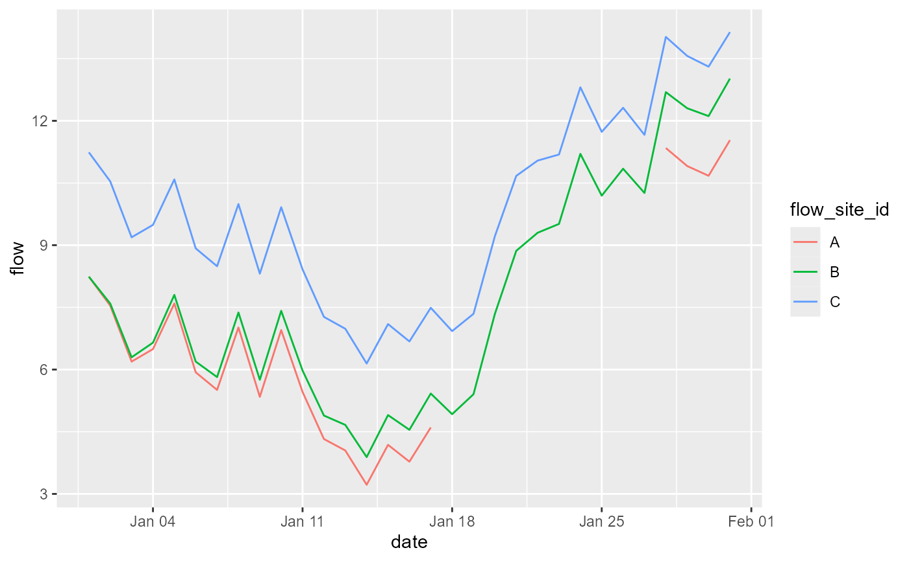
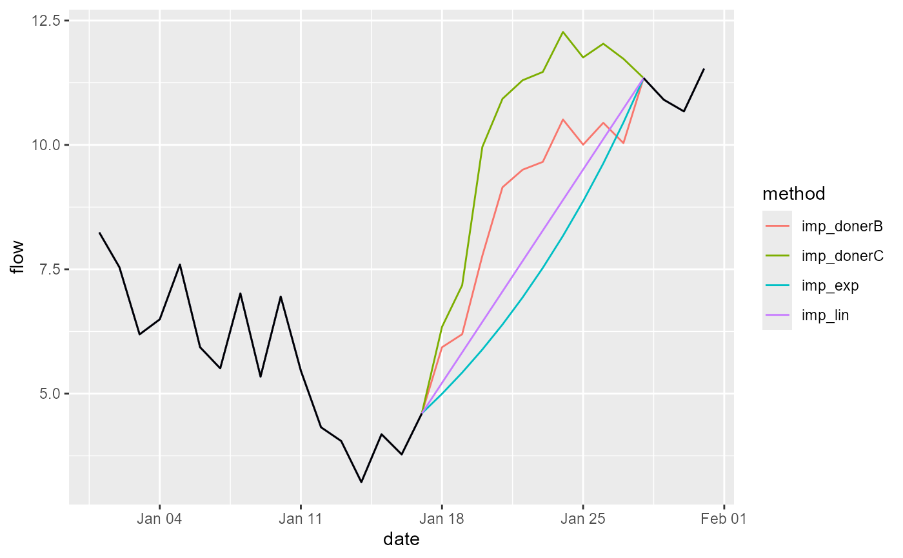

Impute missing flow data.
impute_flow.RdThis function imputes (infills) missing records in daily flow time series for one or more sites (gauging stations) using either interpolation or an equipercentile method. Imputation of missing flow data can improve the later estimation of flow statistics using the calc_flowstats() function and aid the visualisation of hydro-ecological relationships using the plot_hev() function. Note, although this function provides automated tools for imputing missing records, it is advisable to consult a hydrologist if your data contains extensive/lengthy gaps, to ensure that the methods and results are trustworthy.
Usage
impute_flow(data, site_col = " flow_site_id", date_col = "date", flow_col = "flow", method = "linear", donor = NULL)Arguments
- data
A tibble or data frame containing the flow data to be imputed. Include all sites, not just those with missing data, especially if using the equipercentile method.
- site_col
Name of column in
datacontaining unique flow site id. Default = "flow_site_id". Site ids are coerced to a character vector.- date_col
Name of column in
datacontaining date of flow record. Default = "date". Dates must be in "yyyy-mm-dd" format.- flow_col
Name of column in
datacontaining the measured flows. Default = "flow".- method
Imputation method: "linear" (default), "exponential" or "equipercentile".
- donor
– A tibble or data frame with at least two columns: the first a list of flow sites requiring imputation, and the second a list of paired donor sites. Subsequent columns are ignored. Default = NULL. Only used when method = "equipercentile". Note, the date ranges of the donor site and the flow site of interest must overlap by a minimum of 365 records (i.e. 1 year).
Value
A tibble containing the imputed flow data. The data are arranged in long format, with the following columns:
flow_site_id (unique flow site id)
date (of flow record)
imputed (flag indicating whether each flow value is original (0) or imputed (1))
donor_site (id of donor site used for imputation, if "equipercentile" method used)
donor_flow (measured flow at donor site on that date, if "equipercentile" method used)
any other columns in the input dataset are automatically pulled through and joined to the output data table (e.g. the ‘input’ and ‘quality’ columns from the import_flow() function).
Details
This function is intended for imputing gauged daily flow data only; it cannot be used to impute sub-daily data, and is not designed for data on coarser time steps (e.g. 10-daily or monthly).
The function offers three imputation methods: linear interpolation, exponential interpolation and an equipercentile algorithm.
The default linear method uses linear (straight line) interpolation to impute missing flow values. It is therefore unable to infill gaps at the beginning or end of a time series (these flow values remain NA).
The exponential method assumes that flow changes exponentially with time, and so produces imputed values with an accelerating rate of change in flow on the rising limb of the hydrograph, and a decelerating rate of change on the descending limb. Specifically, the flow on day t (Qt) is a function of the flow on the previous day (Qt-1) and the exponential decay constant (λ): Qt = Qt-1 x e-λ. For example, a flow time series with a 3 day gap – 10, NA, NA, NA, 6 – has an exponential decay constant λ = ln(10/6) / 4 = 0.1277. The interpolated value for day 2 is therefore 10 x e-0.1277 = 8.801, and the full interpolated time series is: 10.000, 8.801, 7.746, 6.817, 6.000. Like the linear method, however, it is unable to infill gaps at the beginning or end of a time series. Furthermore, the exponential method will fail if the flow value immediately before or after a gap is 0 (or negative).
The equipercentile method uses measured flows at a donor site to estimate missing flows at a target site. Specifically, the percentile value of the donor flow on any given day is assumed equal to the percentile value of the target flow. Gaps are infilled by calculating the donor flow percentile values and using the existing target flow data to derive the flow equivalent to this percentile value at the target site (for details see Hughes and Smakhtin 1996).
The donor site to be used for each target site can be specified by the user (via the donors argument). If donors = NULL, then the function finds the site in data whose flows are most strongly correlated (using Spearman’s rank correlation coefficient) with those at the target site, and uses that as the donor site. Note that this automated method does not guarantee that the donor site identified will be suitable; indeed, the donor site may be very unsuitable if none of the other sites are climatologically and hydrologically similar to the target site. To mitigate the risk of poor imputation, the function requires that paired target and donor sites have a minimum of 365 overlapping measured flow records. If this condition is not met and a donor site cannot be identified, then the function provides a warning message listing the sites affected.
The interpolation methods have the benefit of simplicity and typically perform best when used to infill relatively short gaps – i.e. intervals where it is reasonable to assume that flows are stable or changing linearly or exponentially over time. The equipercentile method can be better than interpolation at infilling longer gaps, during which flows may change abruptly in response to rainfall events, but its performance is critically dependent on the suitability of the donor site. Donor sites should be hydrologically similar to, and have flows which are strongly correlated with, the target site. If these conditions are not met, then the equipercentile method can produce very imprecise or biased imputed values. When a suitable donor site is used, the equipercentile method has been demonstrated to be superior to many other imputation techniques (including catchment area scaling, long-term mean scaling, and linear regression methods using a single donor site) and to perform similarly to multiple regression using two donor sites (Harvey et al. 2012).
The function applies just one, chosen method at a time, with no default to fall-back methods. If the first method fails to infill all the gaps, then the function can be run a second time, with a different chosen method, to try to infill the remaining gaps, and so on. This iterative approach provides flexibility to determine the sequence in which methods are applied.
The linear and exponential methods can be applied to a single site, but the equipercentile method requires a minimum of two sites (each site acting as a donor for the other).
When processing data for multiple sites, it is recommended that the sites have flow data that span a common time period. This is not essential, however, as the function identifies the earliest and latest dates (across all sites), and ‘expands’ the output dataset to cover all dates for all sites. If flow cannot be imputed for a certain date, then the flow value returned is NA.
Examples
# simulate a year of daily flows for three sites
set.seed(3)
flow1 <- arima.sim(model = list(ar = 0.97), n = 365) + 7
flow2 <- flow1 + 3*sin(seq(0,2*pi,length.out=365))
flow3 <- flow1 + 3*cos(seq(0,2*pi,length.out=365))
# combine into a dataframe
flow_data <- data.frame(flow_site_id = rep(c("A", "B", "C"), each = 365),
date = seq(as.Date("2021-01-01"), as.Date("2021-12-31"), by = "1 day"),
flow = c(flow1, flow2, flow3),
stringsAsFactors=FALSE)
# create missing data for site A during January
flow_data$flow[c(18:27)] <- NA
# plot data for January
flow_data %>%
dplyr::filter(date >= "2021-01-01" & date <= "2021-01-31") %>%
ggplot(aes(x = date, y = flow, group = flow_site_id, colour = flow_site_id)) +
geom_line()

# impute flows using linear method
imp_lin <- impute_flow(data = flow_data,
site_col = "flow_site_id",
date_col = "date",
flow_col = "flow",
method = "linear")
#> Warning: flow data contains negative values
#> Saving 6.67 x 6.67 in image
imp_lin[1:31,]
#> date flow_site_id flow imputed method
#> 1 2021-01-01 A 8.240111 0 <NA>
#> 2 2021-01-02 A 7.540465 0 <NA>
#> 3 2021-01-03 A 6.191899 0 <NA>
#> 4 2021-01-04 A 6.493466 0 <NA>
#> 5 2021-01-05 A 7.594195 0 <NA>
#> 6 2021-01-06 A 5.933651 0 <NA>
#> 7 2021-01-07 A 5.508461 0 <NA>
#> 8 2021-01-08 A 7.014379 0 <NA>
#> 9 2021-01-09 A 5.341415 0 <NA>
#> 10 2021-01-10 A 6.952269 0 <NA>
#> 11 2021-01-11 A 5.460330 0 <NA>
#> 12 2021-01-12 A 4.324071 0 <NA>
#> 13 2021-01-13 A 4.047762 0 <NA>
#> 14 2021-01-14 A 3.220689 0 <NA>
#> 15 2021-01-15 A 4.183554 0 <NA>
#> 16 2021-01-16 A 3.778440 0 <NA>
#> 17 2021-01-17 A 4.603070 0 <NA>
#> 18 2021-01-18 A 5.215858 1 Linear
#> 19 2021-01-19 A 5.828645 1 Linear
#> 20 2021-01-20 A 6.441433 1 Linear
#> 21 2021-01-21 A 7.054221 1 Linear
#> 22 2021-01-22 A 7.667008 1 Linear
#> 23 2021-01-23 A 8.279796 1 Linear
#> 24 2021-01-24 A 8.892583 1 Linear
#> 25 2021-01-25 A 9.505371 1 Linear
#> 26 2021-01-26 A 10.118159 1 Linear
#> 27 2021-01-27 A 10.730946 1 Linear
#> 28 2021-01-28 A 11.343734 0 <NA>
#> 29 2021-01-29 A 10.908792 0 <NA>
#> 30 2021-01-30 A 10.674158 0 <NA>
#> 31 2021-01-31 A 11.533362 0 <NA>
# impute flows using exponential method
imp_exp <- impute_flow(data = flow_data,
site_col = "flow_site_id",
date_col = "date",
flow_col = "flow",
method = "exponential")
#> Warning: flow data contains negative values
#> Saving 6.67 x 6.67 in image
#> Warning: NaNs produced
#> Warning: NaNs produced
imp_exp[1:31,]
#> date flow_site_id flow imputed method
#> 1 2021-01-01 A 8.240111 0 <NA>
#> 2 2021-01-02 A 7.540465 0 <NA>
#> 3 2021-01-03 A 6.191899 0 <NA>
#> 4 2021-01-04 A 6.493466 0 <NA>
#> 5 2021-01-05 A 7.594195 0 <NA>
#> 6 2021-01-06 A 5.933651 0 <NA>
#> 7 2021-01-07 A 5.508461 0 <NA>
#> 8 2021-01-08 A 7.014379 0 <NA>
#> 9 2021-01-09 A 5.341415 0 <NA>
#> 10 2021-01-10 A 6.952269 0 <NA>
#> 11 2021-01-11 A 5.460330 0 <NA>
#> 12 2021-01-12 A 4.324071 0 <NA>
#> 13 2021-01-13 A 4.047762 0 <NA>
#> 14 2021-01-14 A 3.220689 0 <NA>
#> 15 2021-01-15 A 4.183554 0 <NA>
#> 16 2021-01-16 A 3.778440 0 <NA>
#> 17 2021-01-17 A 4.603070 0 <NA>
#> 18 2021-01-18 A 4.996403 1 Exponential
#> 19 2021-01-19 A 5.423346 1 Exponential
#> 20 2021-01-20 A 5.886771 1 Exponential
#> 21 2021-01-21 A 6.389796 1 Exponential
#> 22 2021-01-22 A 6.935805 1 Exponential
#> 23 2021-01-23 A 7.528470 1 Exponential
#> 24 2021-01-24 A 8.171779 1 Exponential
#> 25 2021-01-25 A 8.870058 1 Exponential
#> 26 2021-01-26 A 9.628005 1 Exponential
#> 27 2021-01-27 A 10.450719 1 Exponential
#> 28 2021-01-28 A 11.343734 0 <NA>
#> 29 2021-01-29 A 10.908792 0 <NA>
#> 30 2021-01-30 A 10.674158 0 <NA>
#> 31 2021-01-31 A 11.533362 0 <NA>
# impute flows for site A using automatically selected donor site (B)
imp_donorB <- impute_flow(data = flow_data,
site_col = "flow_site_id",
date_col = "date",
flow_col = "flow",
method = "equipercentile")
#> Warning: flow data contains negative values
#> Saving 6.67 x 6.67 in image
imp_donorB[1:31,]
#> date flow_site_id flow donor_site donor_flow imputed
#> 1 2021-01-01 A 8.240111 B 8.240111 0
#> 2 2021-01-02 A 7.540465 B 7.592247 0
#> 3 2021-01-03 A 6.191899 B 6.295447 0
#> 4 2021-01-04 A 6.493466 B 6.648750 0
#> 5 2021-01-05 A 7.594195 B 7.801169 0
#> 6 2021-01-06 A 5.933651 B 6.192252 0
#> 7 2021-01-07 A 5.508461 B 5.818613 0
#> 8 2021-01-08 A 7.014379 B 7.375989 0
#> 9 2021-01-09 A 5.341415 B 5.754376 0
#> 10 2021-01-10 A 6.952269 B 7.416457 0
#> 11 2021-01-11 A 5.460330 B 5.975607 0
#> 12 2021-01-12 A 4.324071 B 4.890284 0
#> 13 2021-01-13 A 4.047762 B 4.664742 0
#> 14 2021-01-14 A 3.220689 B 3.888252 0
#> 15 2021-01-15 A 4.183554 B 4.901501 0
#> 16 2021-01-16 A 3.778440 B 4.546557 0
#> 17 2021-01-17 A 4.603070 B 5.421129 0
#> 18 2021-01-18 A 5.932530 B 4.923421 1
#> 19 2021-01-19 A 6.194372 B 5.404926 1
#> 20 2021-01-20 A 7.769979 B 7.343085 1
#> 21 2021-01-21 A 9.148157 B 8.863888 1
#> 22 2021-01-22 A 9.501712 B 9.299434 1
#> 23 2021-01-23 A 9.659034 B 9.512599 1
#> 24 2021-01-24 A 10.511001 B 11.202858 1
#> 25 2021-01-25 A 10.004909 B 10.194329 1
#> 26 2021-01-26 A 10.445064 B 10.844103 1
#> 27 2021-01-27 A 10.036617 B 10.259928 1
#> 28 2021-01-28 A 11.343734 B 12.691845 0
#> 29 2021-01-29 A 10.908792 B 12.302962 0
#> 30 2021-01-30 A 10.674158 B 12.113971 0
#> 31 2021-01-31 A 11.533362 B 13.018389 0
#> method
#> 1 <NA>
#> 2 <NA>
#> 3 <NA>
#> 4 <NA>
#> 5 <NA>
#> 6 <NA>
#> 7 <NA>
#> 8 <NA>
#> 9 <NA>
#> 10 <NA>
#> 11 <NA>
#> 12 <NA>
#> 13 <NA>
#> 14 <NA>
#> 15 <NA>
#> 16 <NA>
#> 17 <NA>
#> 18 Equipercentile
#> 19 Equipercentile
#> 20 Equipercentile
#> 21 Equipercentile
#> 22 Equipercentile
#> 23 Equipercentile
#> 24 Equipercentile
#> 25 Equipercentile
#> 26 Equipercentile
#> 27 Equipercentile
#> 28 <NA>
#> 29 <NA>
#> 30 <NA>
#> 31 <NA>
# impute flows for site A using chosen donor site (C)
donors <- data.frame(site = c("A"), donor = c("C"), stringsAsFactors=FALSE)
imp_donorC <- impute_flow(data = flow_data,
site_col = "flow_site_id",
date_col = "date",
flow_col = "flow",
method = "equipercentile",
donor = donors)
#> Warning: flow data contains negative values
#> Saving 6.67 x 6.67 in image
imp_donorC[1:31,]
#> date flow_site_id flow donor_site donor_flow imputed
#> 1 2021-01-01 A 8.240111 C 11.240111 0
#> 2 2021-01-02 A 7.540465 C 10.540018 0
#> 3 2021-01-03 A 6.191899 C 9.190111 0
#> 4 2021-01-04 A 6.493466 C 9.489444 0
#> 5 2021-01-05 A 7.594195 C 10.587047 0
#> 6 2021-01-06 A 5.933651 C 8.922485 0
#> 7 2021-01-07 A 5.508461 C 8.492386 0
#> 8 2021-01-08 A 7.014379 C 9.992506 0
#> 9 2021-01-09 A 5.341415 C 8.312857 0
#> 10 2021-01-10 A 6.952269 C 9.916140 0
#> 11 2021-01-11 A 5.460330 C 8.415747 0
#> 12 2021-01-12 A 4.324071 C 7.270154 0
#> 13 2021-01-13 A 4.047762 C 6.983633 0
#> 14 2021-01-14 A 3.220689 C 6.145473 0
#> 15 2021-01-15 A 4.183554 C 7.096379 0
#> 16 2021-01-16 A 3.778440 C 6.678439 0
#> 17 2021-01-17 A 4.603070 C 7.489379 0
#> 18 2021-01-18 A 6.341862 C 6.927424 1
#> 19 2021-01-19 A 7.178687 C 7.344083 1
#> 20 2021-01-20 A 9.957814 C 9.216820 1
#> 21 2021-01-21 A 10.926804 C 10.671642 1
#> 22 2021-01-22 A 11.300468 C 11.040668 1
#> 23 2021-01-23 A 11.466538 C 11.186795 1
#> 24 2021-01-24 A 12.271444 C 12.809516 1
#> 25 2021-01-25 A 11.758524 C 11.732971 1
#> 26 2021-01-26 A 12.034810 C 12.314271 1
#> 27 2021-01-27 A 11.730913 C 11.661184 1
#> 28 2021-01-28 A 11.343734 C 14.023771 0
#> 29 2021-01-29 A 10.908792 C 13.565160 0
#> 30 2021-01-30 A 10.674158 C 13.306067 0
#> 31 2021-01-31 A 11.533362 C 14.140026 0
#> method
#> 1 <NA>
#> 2 <NA>
#> 3 <NA>
#> 4 <NA>
#> 5 <NA>
#> 6 <NA>
#> 7 <NA>
#> 8 <NA>
#> 9 <NA>
#> 10 <NA>
#> 11 <NA>
#> 12 <NA>
#> 13 <NA>
#> 14 <NA>
#> 15 <NA>
#> 16 <NA>
#> 17 <NA>
#> 18 Equipercentile
#> 19 Equipercentile
#> 20 Equipercentile
#> 21 Equipercentile
#> 22 Equipercentile
#> 23 Equipercentile
#> 24 Equipercentile
#> 25 Equipercentile
#> 26 Equipercentile
#> 27 Equipercentile
#> 28 <NA>
#> 29 <NA>
#> 30 <NA>
#> 31 <NA>
# combine four sets of imputation results
imp_all <- cbind(imp = rep(c("imp_lin", "imp_exp", "imp_donerB", "imp_donerC"), each = 365*3), rbind(imp_lin, imp_exp, imp_donorB[,c(1,2,3,6,7)], imp_donorC[,c(1,2,3,6,7)]))
# filter data for plotting
imp_plot <- imp_all %>%
dplyr::filter(flow_site_id == "A") %>%
dplyr::filter(date >= "2021-01-01" & date <= "2021-01-31")
# compare imputed values for site A
ggplot() +
geom_line(data = imp_plot, aes(x = date, y = flow, group = imp, colour = imp)) +
geom_line(data = flow_data[1:31,], aes(x = date, y = flow), colour = "black") +
labs(colour = "method")
